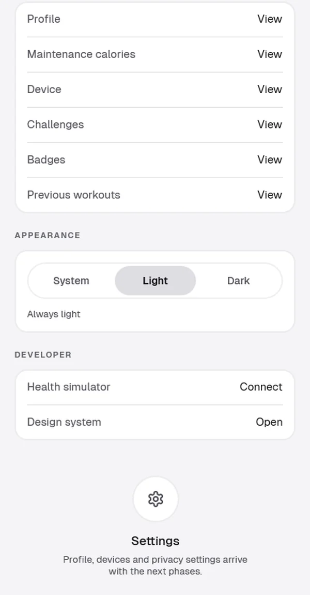
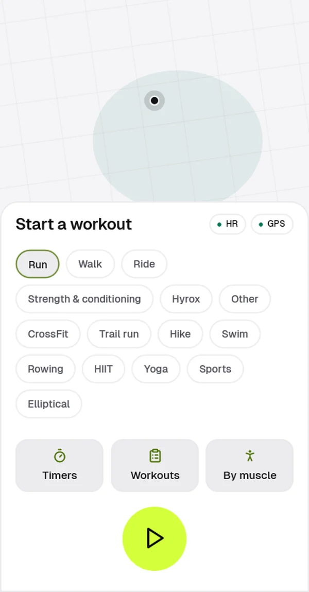
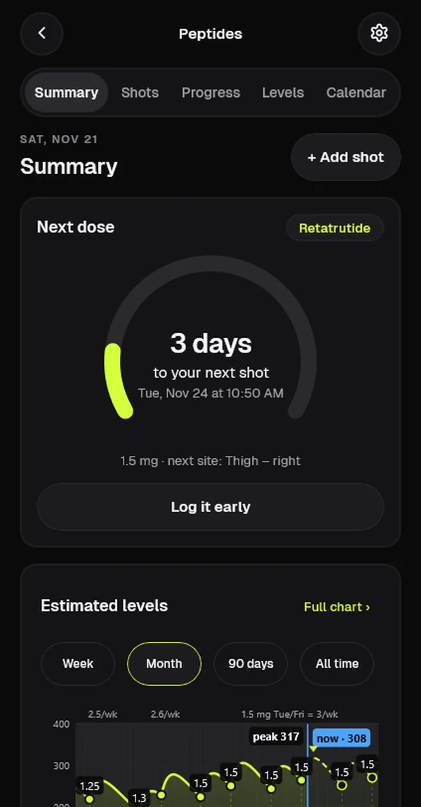
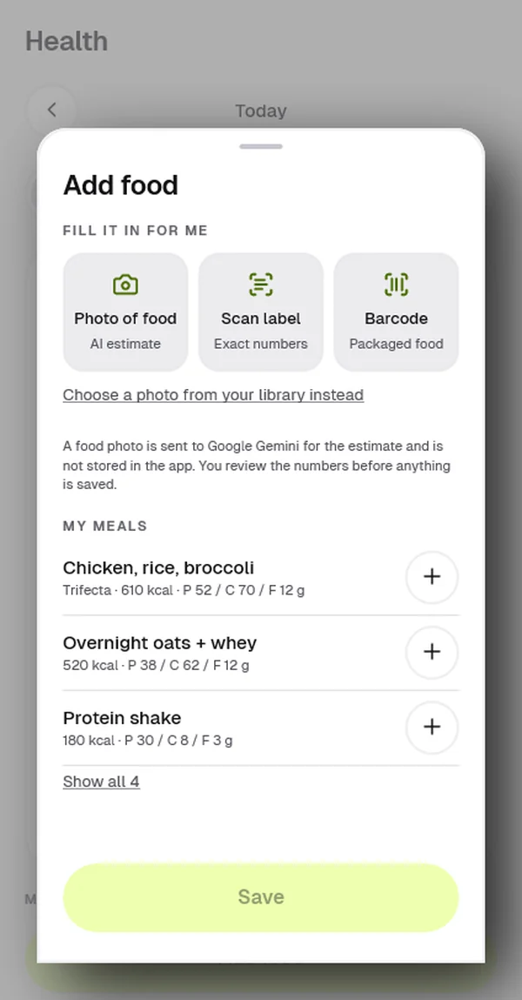

Test build
Open this page on your phone and it shows the right download. Or pick your phone above.
iPhone and iPad
Open this page in Safari and tap Install. It installs over the build you have and keeps your data.
Install on this iPhoneAndroid
Download it, open the file and tap Update. It installs over the build you have and keeps your data.
Download FitnessPro-1.10.apk



Send anything that looks wrong with a screenshot and your phone model. The bottom of the More tab shows which build you have.
Nothing happens when you tap Install. Open the page in Safari itself. The browser inside Gmail, Messages or another app often blocks the install, so copy the link and paste it into Safari. After the first tap the page stays as it is; the download runs on the Home Screen.
"Unable to install" or "integrity could not be verified". This build only installs on the iPhones and iPads registered for testing. A new device has to be added first, and then it needs a build made after that. To add one, send its identifier (UDID): with the iPhone plugged into a Mac, open Finder, select the iPhone, and tap the line under its name until the UDID shows.
FitnessPro-1.10.apk in Downloads.Do not uninstall first. Updating keeps your profile, workouts and foods. Uninstalling deletes them.
A Polar OH1, H9, H10 or any Bluetooth chest strap works. You need about 250 MB of free space.
Check in any time, each with its time. After a dose. Food by time. Scan a supplement. A Steps screen and a Progress chart; weight became a slider.
Barcode scanner for packaged food. A pace slider for your goal. Health import. A daily routine step in setup.
Workout bank with Base, Scaled and No equipment levels, and paste-in class posts. Label reader. Posted workouts on Home and the Calendar. Timers, Workouts and By muscle on the Train tab. Track distance for any workout.
Fixed: a walk "disappearing" when you left the app, frozen screens on long workouts, and forgotten workouts that kept recording. They now pause and save themselves.
Workout by muscle on a 3D body. Maintenance calories, Meal planner, My meals and calories from a photo.
iPhone: touch and hold the FitnessPro icon, tap Remove App, then Delete App.
Android: long-press the FitnessPro icon, tap App info, then Uninstall.
This deletes all of your FitnessPro data on the phone, so only do it when you are done testing.